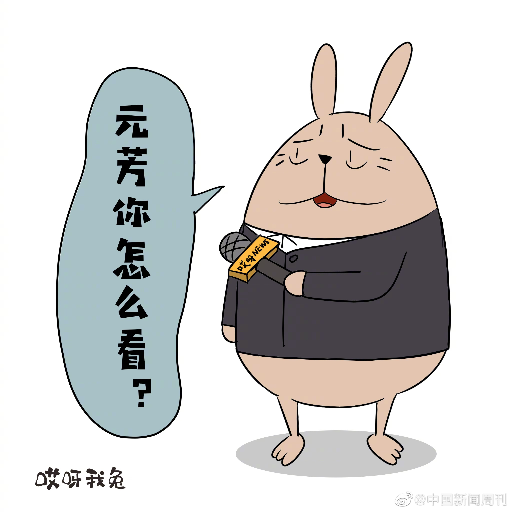

Ada李力
2019-09-27

Ada李力
2019-09-27
这个男生已经提前给自己找好借口了，如果他没应聘上，而女生应聘上，是因为"公司会录取一个技术可能稍差的女孩，仅仅因为要平衡部门的性别比例。"。我在IT行业招聘过程序员，可以告诉大家：公司不是慈善机构，招聘员工考虑的就是能力，不是性别。
@马库斯说:
姐姐，我想问您一个问题。我正在一个编程培训班学习，周围有很多本专业的男生。我旁边一个男孩子告诉我，女生在找程序员这种工作的时候可能会有优势，有的公司会录取一个技术可能稍差的女孩，仅仅因为要平衡部门的性别比例。因为他的一个女同学就是这样进了一个全体均为男性的部门。我觉得这也是一个变相的性别歧视，被录取的女孩更像是一种资源，而不是凭过硬的技术被录取。可女孩确实因为这种“歧视”得利了，我都不知道该用什么态度面对这种情况了，我还是很想靠技术找到工作的。您怎么看呢？
————
大家讨论一下看看。
因为女性目前处在弱势地位，任何对女性有利的我都赞成٩(͡๏̯͡๏)۶
我后来想想这个男的是不是就是那种人，自己没有面试上自己技术不行，那别的女孩子面试上了他就说，噢她是女的，她是占性别优势去的。类似于公司里一个女孩子升职了他没有升他就说啊她是个女的她是睡上去的那种男的。
————
大家讨论一下看看。
因为女性目前处在弱势地位，任何对女性有利的我都赞成٩(͡๏̯͡๏)۶
我后来想想这个男的是不是就是那种人，自己没有面试上自己技术不行，那别的女孩子面试上了他就说，噢她是女的，她是占性别优势去的。类似于公司里一个女孩子升职了他没有升他就说啊她是个女的她是睡上去的那种男的。
Ada李力
2019-09-27
进步举措 。执行过程中也得申明育儿假不得转让，男性育儿假必须本人休，不然作废。另外，这种福利成本不能让企业单独承担，得配有企业减税措施吧。
。执行过程中也得申明育儿假不得转让，男性育儿假必须本人休，不然作废。另外，这种福利成本不能让企业单独承担，得配有企业减税措施吧。
@中国新闻周刊:
【#宁夏首创夫妻共同育儿假# 0至3岁子女父母每年可休10天】9月27日，在宁夏回族自治区十二届人大常委会第十五次会议上，《宁夏回族自治区妇女权益保障条例》（以下简称《条例》）高票通过。创新提出“鼓励用人单位对符合法律、法规规定育有子女的夫妻，在子女零至三周岁期间，每年给予夫妻双方各十天共同育儿假”。《条例》突出了反性骚扰和对女性未成年人的保护。就业中的性别歧视，《条例》第26条不仅禁止直接歧视，也命令禁止间接歧视。（中新网）
- 